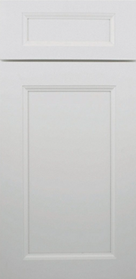
Uptown White
Crisp and bright, ideal for airy kitchens and transitional interiors.

Cabinet Collection
Universal Marble & Granite offers a variety of different cabinet styles to choose from including Traditional Style Cabinetry, European Style Flat Panels, and more.

Traditional Style Cabinetry
UMG describes its traditional style cabinetry as elegant and timeless, with intricate detailing, symmetry, and a strong sense of craftsmanship. This section turns those offerings into a clean, browseable grid for a more elevated shopping feel.

Crisp and bright, ideal for airy kitchens and transitional interiors.
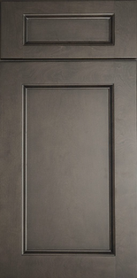
A soft gray finish that keeps a classic profile but feels updated.
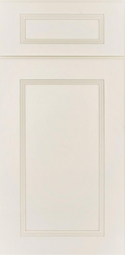
Warm cream cabinetry that adds richness without feeling too heavy.
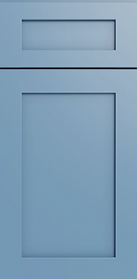
A deeper accent option for clients who want color with familiar shaker lines.
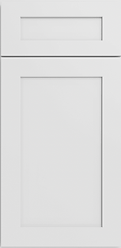
Simple shaker styling with a versatile finish that works in many palettes.
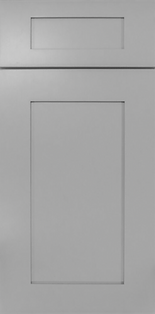
Muted gray for a balanced look between classic detailing and modern calm.
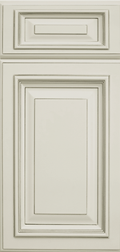
A softer neutral with a more upscale, tailored look in refined spaces.
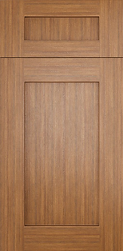
Earthy wood tones that bring contrast and warmth to larger rooms.
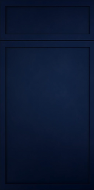
A soft blue hue that adds a touch of color while maintaining a classic look.
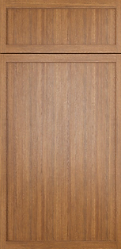
A soft brown hue that adds a touch of color while maintaining a classic look.
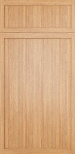
A soft sand hue that adds a touch of color while maintaining a classic look.
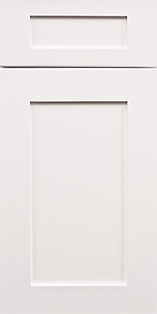
A bright and clean white finish that enhances natural light and creates a fresh atmosphere.
European Flat Panels
UMG presents its European style cabinetry as clean-lined, frameless, and subtly luxurious. This section leans into that message with tighter cards, quieter surfaces, and a more modern visual rhythm.
Bright, minimalist, and easy to pair with warm wood floors or bold counters.
Industrial-inspired gray that gives kitchens a clean architectural mood.
Bold and contemporary, great for dramatic kitchens with strong contrast.
A sleek statement finish that feels modern without losing warmth.
A soft neutral for spaces that need a modern look with a lighter touch.
Wood-inspired texture for homeowners who want modern forms with warmth.
A natural-feeling finish that pairs especially well with stone and matte hardware.
Muted, textured styling that keeps the space calm and design-forward.
How to Use This Page
Instead of one long image-heavy page, this layout breaks the cabinet catalog into clearer groupings. It gives visitors a faster way to compare style directions before they reach out.
You could later swap each placeholder visual for real cabinet photography, add filters by finish, or turn each card into its own detail page.
Browse countertop options nextWhy This Layout Works
Inspired by the cleaner shopping experience on Omega's cabinet page, with categories and product-style cards.
It reuses your current color palette, serif headings, buttons, and header behavior so the site still feels like one brand.
You can keep adding cabinet names from the UMG list without rebuilding the whole page structure each time.
Philadelphia Showroom
Visit UMG at 233 W Lehigh Ave, Philadelphia, or contact the team to compare finishes, layouts, and kitchen or bath options.